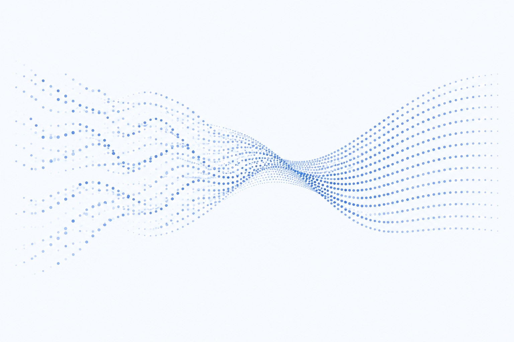
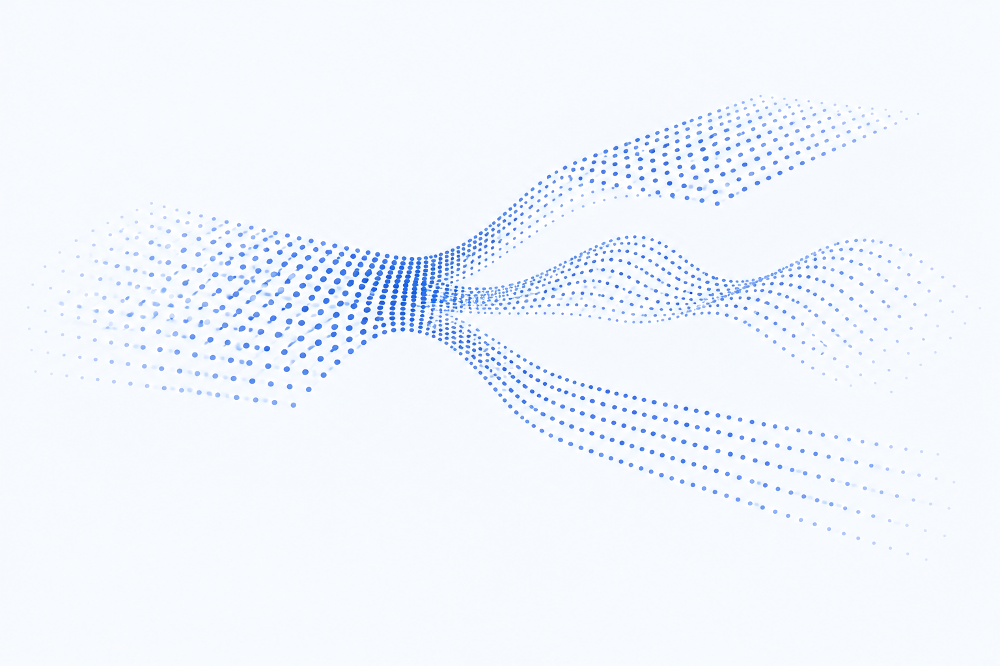
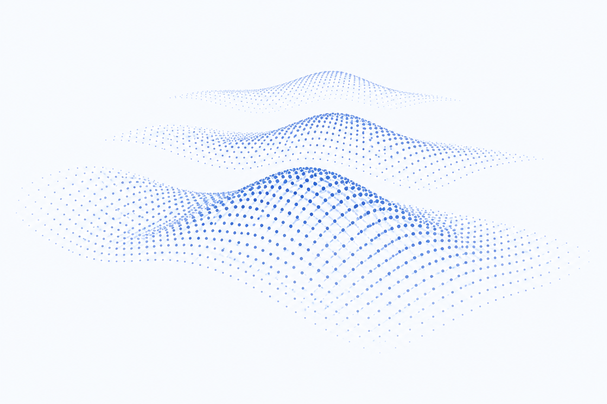

（1）多元兼容：覆盖主流国产芯片，跨平台兼容率90%
KernelSwift智能算子
迁移系统
支持多场景高性能算子，从"人工手搓"到"智能生成"的范式跃迁
KernelSwift 是一款面向 AI 芯片与算子开发的智能算子迁移系统，核心目标是用 AI 自动化能力解决多元芯片的算子适配难题，打通了工具平台 — 算力硬件 — 基础大模型的协同闭环，构建智能算子生成的完整技术生态。
产品特性
（2）丰富场景：面向 AI4S、LLM、CV、CNN 等场景生成高性能算子
（3）低门槛开发：降低手工编码与专家调优依赖
（4）Day 0适配：传统周级优化任务可天级达到专家水准
（5）多使用方式：支持web页面、mcp服务、skill插件、私有化部署
90% 兼容性、triton/
maca c/
ascend c / 8+芯片
maca c/
ascend c / 8+芯片
核心能力
算子目录节选
- engram_hashDEEPSEEK V4
- NoopEliminationModel大模型核心算子
- GeluAndMul大模型核心算子
- MusicFlamingoRotaryEmbedding大模型核心算子
- SiluAndMulWithClamp大模型核心算子
- FusionPatternModel大模型核心算子
场景解析



实操展示
AI4SLLMCVCNNDeepSeekQwenGPT
KernelSwift
开源工具、自主创新、生态共建
英伟达华为昇腾天数智芯沐曦海光寒武纪平头哥燧原
算子加速一览
1.0向2.0演化进行中
TritonTorchMojoPrompt
多生态适配
1.0重点
Code AgentRAG
Test Agent
自动迭代
C like code
KernelSwift算子转换
2.0重点
Agent skills优化pattern
厂商亲和API
自动迭代
optimizer code
厂商共建算子优化
共建
Deeplink
生态
Deeplink
生态
使用方式
Web 平台
一站式 Web 控制台，提供可视化算子编辑、性能对比与实时效果预览。
立即体验 >MCP 服务
基于标准 MCP 协议，无缝对接现有大模型开发链路，实现全流程 AI 驱动优化。
Skill 插件
沉淀行业专家经验的 Skill 插件库，覆盖多芯片架构，一键复用高性能优化能力。
私有化部署
企业级私有化部署方案，支持离线运行与深度定制，核心数据不出域。
联系我们 > deeplink@pjlab.org.cn生态圈
华为沐曦燧原华为沐曦燧原